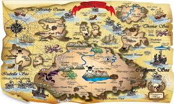

Certo dia, três amigos estavam brincando próximo a um lago, até que viram algo boiando na água. Um deles resolveu pegar, e quando pegou, percebeu que se tratava de uma garrafa e dentro tinha um mapa. Resolveram ler e lá tinha enigmas para eles resolverem, com alguns países.
A primeira pista que existe lá daria em uma pensão chamada: Pousada do Pirata. Ao chegarem lá, um papagaio guiou eles até a próxima pista.
Ao chegarem na argentina, a primeira pista daria em uma pensão chamada: Estalagem dos Andes. Na manhã seguinte, resolveram ir até uma caverna que havia várias armadilhas antigas, porém lhamas estavam bloqueando a passagem.